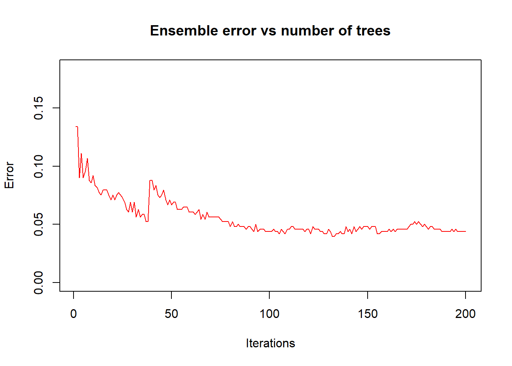
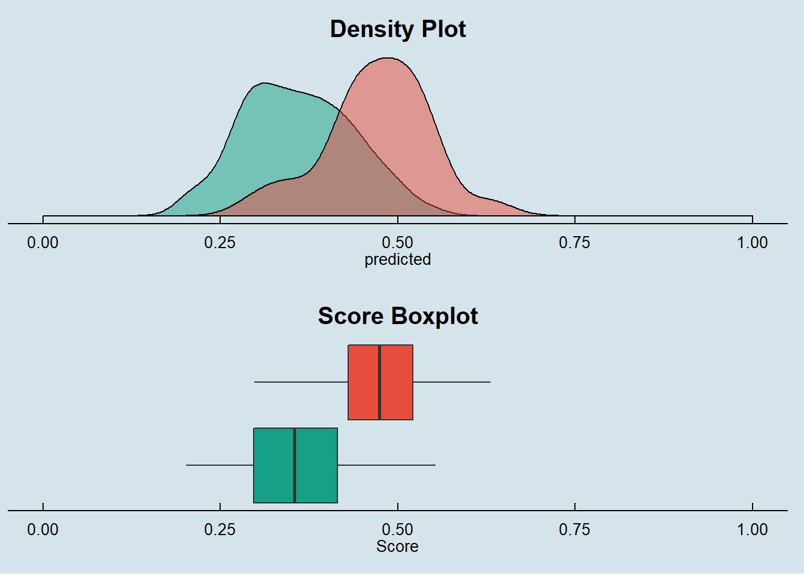
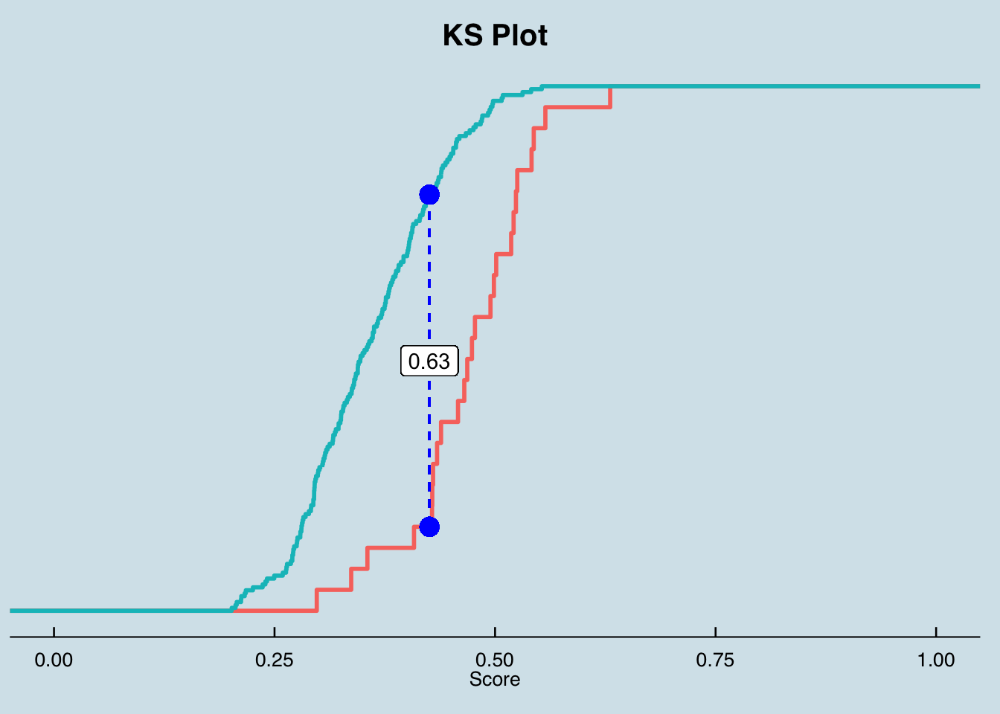

The goal of this session is trying to fit a Boosting model on Loan data aiming to predict the probability of delinquency for each contract.
Using the vanilla transaction dataset, we calculated several derived variables for each account as described in the Data Preparation session.
This dataset is joined with Loan, Client, Credit Card, District, Account and Account Balance tables.
We ended up having a data set with 118 variables.
| variables |
|---|
| y_loan_defaulter |
| x_account_balance |
| x_average_salary |
| x_avg_account_balance |
| x_card_age_month |
| x_card_type_classic |
| x_card_type_gold |
| x_card_type_junior |
| x_client_age |
| x_client_gender_male |
| x_district_name_Benesov |
| x_district_name_Beroun |
| x_district_name_Blansko |
| x_district_name_Breclav |
| x_district_name_Brno_mesto |
| x_district_name_Brno_venkov |
| x_district_name_Bruntal |
| x_district_name_Ceska_Lipa |
| x_district_name_Ceske_Budejovice |
| x_district_name_Cesky_Krumlov |
| x_district_name_Cheb |
| x_district_name_Chomutov |
| x_district_name_Chrudim |
| x_district_name_Decin |
| x_district_name_Domazlice |
| x_district_name_Frydek_Mistek |
| x_district_name_Havlickuv_Brod |
| x_district_name_Hl.m._Praha |
| x_district_name_Hodonin |
| x_district_name_Hradec_Kralove |
| x_district_name_Jablonec_n._Nisou |
| x_district_name_Jesenik |
| x_district_name_Jicin |
| x_district_name_Jihlava |
| x_district_name_Jindrichuv_Hradec |
| x_district_name_Karlovy_Vary |
| x_district_name_Karvina |
| x_district_name_Kladno |
| x_district_name_Klatovy |
| x_district_name_Kolin |
| x_district_name_Kromeriz |
| x_district_name_Kutna_Hora |
| x_district_name_Liberec |
| x_district_name_Litomerice |
| x_district_name_Louny |
| x_district_name_Melnik |
| x_district_name_Mlada_Boleslav |
| x_district_name_Most |
| x_district_name_Nachod |
| x_district_name_Novy_Jicin |
| x_district_name_Nymburk |
| x_district_name_Olomouc |
| x_district_name_Opava |
| x_district_name_Ostrava_mesto |
| x_district_name_Pardubice |
| x_district_name_Pelhrimov |
| x_district_name_Pisek |
| x_district_name_Plzen_jih |
| x_district_name_Plzen_mesto |
| x_district_name_Plzen_sever |
| x_district_name_Prachatice |
| x_district_name_Praha_vychod |
| x_district_name_Praha_zapad |
| x_district_name_Prerov |
| x_district_name_Pribram |
| x_district_name_Prostejov |
| x_district_name_Rakovnik |
| x_district_name_Rokycany |
| x_district_name_Rychnov_nad_Kneznou |
| x_district_name_Semily |
| x_district_name_Strakonice |
| x_district_name_Sumperk |
| x_district_name_Svitavy |
| x_district_name_Tabor |
| x_district_name_Tachov |
| x_district_name_Teplice |
| x_district_name_Trebic |
| x_district_name_Trutnov |
| x_district_name_Uherske_Hradiste |
| x_district_name_Usti_nad_Labem |
| x_district_name_Usti_nad_Orlici |
| x_district_name_Vsetin |
| x_district_name_Vyskov |
| x_district_name_Zdar_nad_Sazavou |
| x_district_name_Zlin |
| x_district_name_Znojmo |
| x_last_transaction_age_days |
| x_loan_amount |
| x_loan_duration |
| x_loan_payments |
| x_no_of_cities |
| x_no_of_commited_crimes_1995 |
| x_no_of_commited_crimes_1996 |
| x_no_of_enterpreneurs_per_1000_inhabitants |
| x_no_of_inhabitants |
| x_no_of_municip_2000_to_9999 |
| x_no_of_municip_500_to_1999 |
| x_no_of_municip_greater_10000 |
| x_no_of_municip_inhabitants_less_499 |
| x_prop_household |
| x_prop_insurance_payment |
| x_prop_interest_credited |
| x_prop_loan_payment |
| x_prop_old_age_pension |
| x_prop_other |
| x_prop_statement |
| x_ratio_of_urban_inhabitants |
| x_region_central_Bohemia |
| x_region_east_Bohemia |
| x_region_north_Bohemia |
| x_region_north_Moravia |
| x_region_Prague |
| x_region_south_Bohemia |
| x_region_south_Moravia |
| x_transaction_amount |
| x_transaction_count |
| x_unemploymant_rate_1995 |
| x_unemploymant_rate_1996 |
One advantage of Boosting models is that it does not require heavy feature engineering.
We will only remove x_prop_old_age_pension that we know beforehand to have no variance in the dataset.
This model is also not sensible to outliers, missing values and multicollinearity.
The available data in Loan Dataset is split into Train and Testing data on the following proportion:
We are selecting exact the same samples for all models to allow comparison between then.
SplitDataset <- source_train_test_dataset
data.train_boost <- SplitDataset$data.train
data.test_boost <- SplitDataset$data.test
kable(SplitDataset$event.proportion)| scope | 0 | 1 |
|---|---|---|
| full dataset | 0.8885630 | 0.1114370 |
| train dataset | 0.8933054 | 0.1066946 |
| test dataset | 0.8774510 | 0.1225490 |
loan_dataset_boost$y_loan_defaulter <- as.factor(loan_dataset_boost$y_loan_defaulter)
data.train_boost$y_loan_defaulter <- as.factor(data.train_boost$y_loan_defaulter)
data.test_boost$y_loan_defaulter <- as.factor(data.test_boost$y_loan_defaulter)
data.train_boost <- dplyr::select(data.train_boost, names(loan_dataset_boost))
data.test_boost <- dplyr::select(data.test_boost, names(loan_dataset_boost))Both datasets keep the same proportion for the explained variable around 11%.
With the final cleaned dataset, we got from above steps fit our Boosting Model for y_loan_defaulter on all x variables.
We made a lot of tests playing with control parameters trying to reduce the errors and we decided to keep mfinal = 100, minbucket = 25 and maxdepth = 1 .
names <- names(data.train_boost) # saving the name of all vars to put on formula
f_full <- as.formula(paste("y_loan_defaulter ~",
paste(names[!names %in% "y_loan_defaulter"], collapse = " + ")))
boost <- boosting(f_full, data= data.train_boost, mfinal= 100,
coeflearn = "Freund",
control = rpart.control(minbucket= 25,maxdepth = 1))
saveRDS(boost, "./models/boosting.rds")
Boosting is a black box ensemble method! But the model can tell us the importance of each variable to predict the results. For this model the four principal vars are:
The result is similar to the Logistic Regression and Decision Tree models.
Here we will perform basically the same steps we did in the Logistic Regression and Decision Tree models.
A comparison against all the models will be provided in the Final Report session of this exercise.
We started this step by making predictions using our model on the X’s variables in our Train and Test datasets.
## making preditions for each model and consolidating in a single data frame
prob.full = list()
prob.train = list()
prob.test = list()
prob.full$boosting.actual <- loan_dataset_boost$y_loan_defaulter
prob.full$boosting.predicted <- predict.boosting(boost,
newdata = loan_dataset_boost)$prob[, 2]
prob.train$boosting.actual <- data.train_boost$y_loan_defaulter
prob.train$boosting.predicted <- predict.boosting(boost, newdata =
data.train_boost)$prob[, 2]
prob.test$boosting.actual <- data.test_boost$y_loan_defaulter
prob.test$boosting.predicted <- predict.boosting(boost, newdata =
data.test_boost)$prob[, 2]
prob.full <- prob.full %>% as_tibble()
prob.train <- prob.train %>% as_tibble()
prob.test <- prob.test %>% as_tibble()To calculate the performance measures, derived from the confusion matrix, we need to find the score cut off that best split our test dataset into Defaulters and Non-Defaulters.
In this exercise we decide to not prioritize the accuracy on predicting Defaulters and Non-Defaulters, therefore we are looking for the score cut off that best predict each class equally.
With the returned object from this function we can plot the comparison between TPR (True Positive Rate) and TNR (True Negative Rate) to find the best cut off.
## getting measures -----------------------------------------------------------------
metricsByCutoff.test_boost <- modelMetrics(prob.test$boosting.actual,
prob.test$boosting.predicted,
plot_title = 'Boosting')
metricsByCutoff.test_boost$PlotWith the optimized cut off we calculate the full set of model metrics using the function HMeasure from hmeasure library.
# Boosting
measures.boosting.train <- HMeasure(prob.train$boosting.actual,
prob.train$boosting.predicted,
threshold = metricsByCutoff.test_boost$BestCut['Cut'])
measures.boosting.test <- HMeasure(prob.test$boosting.actual,
prob.test$boosting.predicted,
threshold = metricsByCutoff.test_boost$BestCut['Cut'])
# join measures in a single data frame
measures <- t(bind_rows(measures.boosting.train$metrics,
measures.boosting.test$metrics
)) %>% as_tibble(., rownames = NA)
colnames(measures) <- c('boosting - train', 'boosting - test')
measures$metric = rownames(measures)
measures <- dplyr::select(measures, metric, everything())Below are the metrics on the train and test dataset:
| metric | boosting - train | boosting - test |
|---|---|---|
| H | 0.8386978 | 0.4670309 |
| Gini | 0.9729990 | 0.7059218 |
| AUC | 0.9864995 | 0.8529609 |
| AUCH | 0.9880378 | 0.8803352 |
| KS | 0.9077926 | 0.6332961 |
| MER | 0.0397490 | 0.0980392 |
| MWL | 0.0175767 | 0.0788639 |
| Spec.Sens95 | 0.9320843 | 0.4134078 |
| Sens.Spec95 | 0.9215686 | 0.4400000 |
| ER | 0.1694561 | 0.2205882 |
| Sens | 1.0000000 | 0.8400000 |
| Spec | 0.8103044 | 0.7709497 |
| Precision | 0.3863636 | 0.3387097 |
| Recall | 1.0000000 | 0.8400000 |
| TPR | 1.0000000 | 0.8400000 |
| FPR | 0.1896956 | 0.2290503 |
| F | 0.5573770 | 0.4827586 |
| Youden | 0.8103044 | 0.6109497 |
| TP | 51.0000000 | 21.0000000 |
| FP | 81.0000000 | 41.0000000 |
| TN | 346.0000000 | 138.0000000 |
| FN | 0.0000000 | 4.0000000 |
This model delivered the better accuracy of all models done here (76.96%)! We will compare how it performed against other classes of models in the Final Report session.
Below the confusion matrix and general performance of the model:
# accuracy metrics ---------------------------------------------------------------
# boosting
accuracy(score = prob.test$boosting.predicted,
actual = prob.test$boosting.actual,
threshold = metricsByCutoff.test_boost[["BestCut"]][["Cut"]])##
##
## pred.1 pred.0
## --------- ------- -------
## actual.1 21 4
## actual.0 41 138
## [1] "--------------------------------------------------------------"
## [1] "Model General Accuracy of: 77.94%"
## [1] "True Positive Rate of : 84%"We finally look at the score distribution charts to check how well the model is able to discriminate Defaulters and Non-Defaulters.
p1 <- Score_Histograms(prob.test,
prob.test$boosting.predicted,
prob.test$boosting.actual,
'Density Plot') + theme(axis.title.y = element_blank())
p2 <- Score_Boxplot(prob.test,
prob.test$boosting.predicted,
prob.test$boosting.actual,
'Score Boxplot')
p3 <- KS_Plot(prob.test$boosting.predicted[prob.test$boosting.actual == 0],
prob.test$boosting.predicted[prob.test$boosting.actual == 1],
'KS Plot') + theme(axis.title.y = element_blank(),
axis.text.y = element_blank())
ggarrange(p1, p2, nrow = 2)

By the score density we can see that the boosting model is not as narrow as the decision tree on the scores it assigns to the observations.
The box plot can show us a clear discrimination between Defaulters and Non-Defaulters.
The KS metric .63 is considered good for this classification model.
In the Final Report session, we will look more closely on the AUC and Gini metrics by plotting the ROC curve and comparing against other models.
Stay tuned!!!